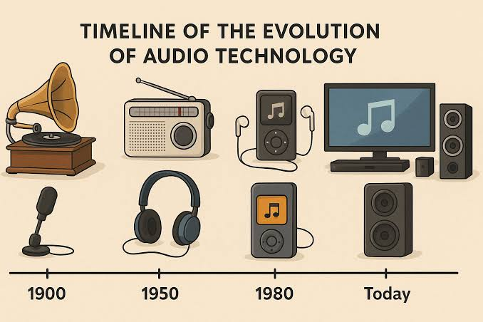
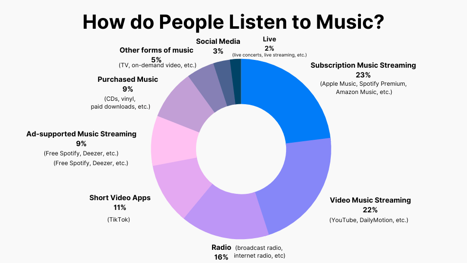

From Instruments to Digital Recording
Technology has always sat at the core of musical innovation, starting with prehistoric drilled flutes crafted using rudimentary tools and evolving into today's vast array of instruments and digital tools. Around 1700, Bartolomeo Cristofori developed the first piano by adapting harpsichord keyboards to strike strings with hammers, while the 1857 phonautograph became the earliest known sound-recording device by tracing sound waves onto blackened paper or glass. Electronic and digital milestones expanded production even further, from the 1951 RCA programmable synthesizer to the 1982 Philips and Sony compact disc (CD) and Yamaha's 1987 MIDI-controllable DMP7 digital mixer. (Pandey, 2018) For consumers, the CD quickly replaced vinyl and cassette tapes by offering durable, crystal-clear digital audio on a physical disc.

How We Listen Today
Alongside creation tools, how people experience music shifted from shared physical gatherings to personal and connected spaces. For centuries, listening required sharing the same space with performers until phonographic playback made recorded sound repeatable without a live musician present. Early twentieth-century radio mass-distributed music yet offered limited listener control over repertoire, whereas portable cassette players like the Walkman enabled private, headphone-driven listening. By the late 1990s and early 2000s, personal computers and the MP3 compression format turned songs into lightweight digital files that could be stored on hard drives and portable players. In 2003, Apple's iTunes Store legitimized digital downloads by allowing listeners to buy individual tracks rather than entire albums, bridging the gap between physical ownership and online music. Soon after, broadband internet, cloud storage, YouTube, and livestreaming moved listeners away from local file libraries toward instant, on-demand access. (Pandey, 2018)
Today, most listeners no longer buy individual albums or manage folders of downloaded MP3s, relying instead on on-demand streaming platforms for daily listening. Rather than choosing one album at a time, modern audiences increasingly consume music through curated and algorithmic playlists built around specific moods, genres, or activities like studying and exercising (Bangera et al., 2024). At the same time, music discovery has become heavily driven by short-form video platforms such as TikTok, Instagram Reels, and YouTube Shorts, where a brief clip can propel an older or independent song to the top of global charts overnight. Listening has therefore evolved into a continuous, social, and highly personalized experience.

What a Music Streaming Service Actually Does
Behind this seamless user experience, a streaming service delivers media continuously in real time or on demand, relying on cloud storage, media processing, and content delivery networks (CDNs) to keep latency low and Quality of Experience (QoE) high (ScienceDirect, n.d.). In practice, the platform does not own the music itself, so it negotiates licensing agreements with rights holders, record labels, publishers, and collecting societies to distribute catalogs legally. It maintains dedicated apps across smartphones, computers, smart TVs, gaming consoles, and connected cars while dynamically adapting stream bitrates to different hardware and bandwidth conditions. To reach the broadest audience, platforms typically combine free, ad-supported tiers with paid subscriptions that remove commercials, unlock offline downloads, and offer higher audio fidelity. Furthermore, streaming services analyze listening history, skip rates, and user behavior through recommendation algorithms and editorial curation to generate personalized mixes and playlists.

Artist Discovery in the Streaming Era
These same digital platforms have reshaped artist discovery by letting creators reach audiences directly without relying solely on traditional gatekeepers. Justin Bieber is a prime example, having drawn widespread attention by posting homemade cover videos on YouTube before signing a record deal and building a global pop career propelled by social media and streaming (CBC Music, 2025). Today, countless emerging musicians follow a similar path by pairing short-form viral videos with instant global availability on streaming platforms, turning online momentum into worldwide chart success.